A sample of Power BI dashboards built for retail sales, distribution, and shipment reporting across several categories and clients. Sensitive figures and account names have been masked for confidentiality.
Brand and category share tracking across multiple syndicated data sources (IRI, Nielsen, OCR, SPINS), with dollar sales trends and category-level rollups.
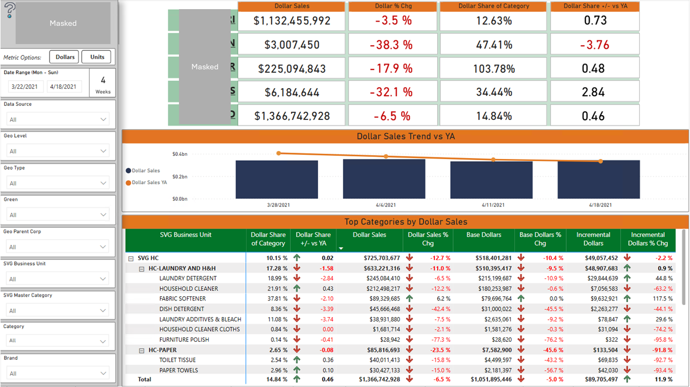
Weekly retail sales tracking by category and brand, with item-level detail and distribution breakdowns across retailers.
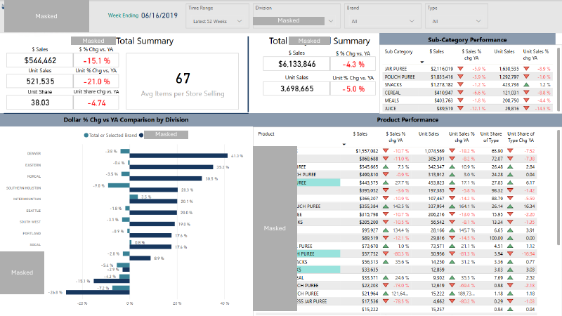
Retailer and household-buying trend dashboard for a beer company's national accounts, tracking category share and depletions year over year.
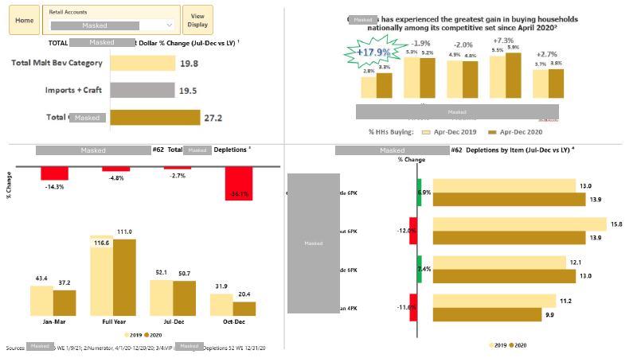
Retail dollar and unit sales performance by channel, category, and item, with trend charts and a drillable hierarchy summary.
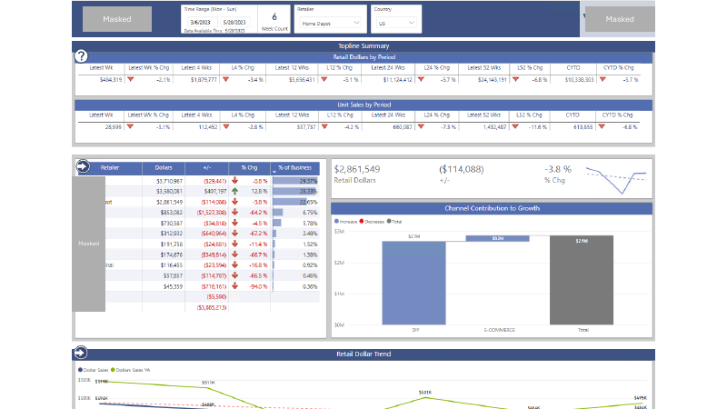
DC and FC on-hand quantity tracking versus year ago, with a daily trend chart and retailer-level breakdown table.
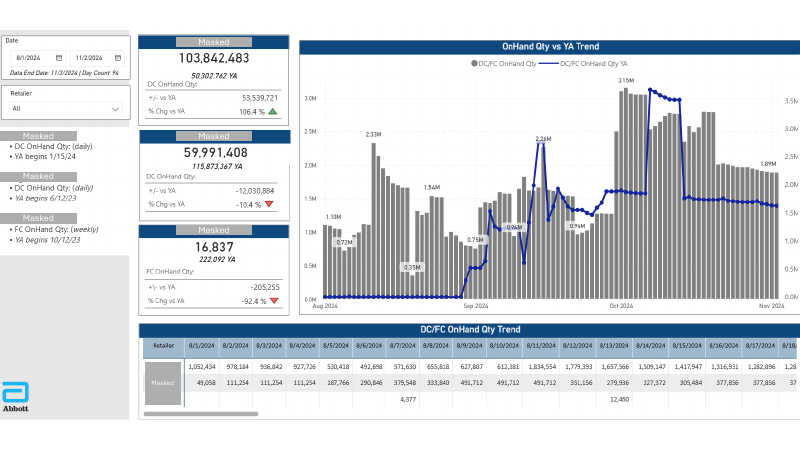
A multi-report shipment dashboard covering executive summaries, equity group performance, store-level KPI tracking, and voids reporting for a wholesale distributor.
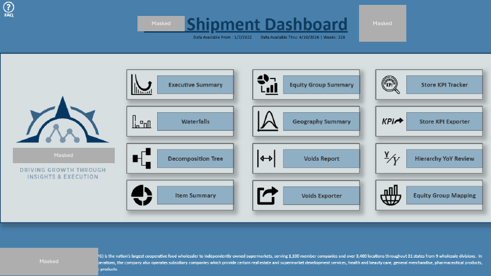
Dollar sales and unit trends across chocolate, spreads, cookies, and mint categories, with a decomposition tree for exploring drivers of change.
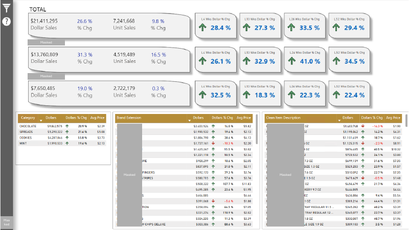
Dollar and case volume tracking versus prior year by brand and store, with opportunity-store reporting for expanding distribution.
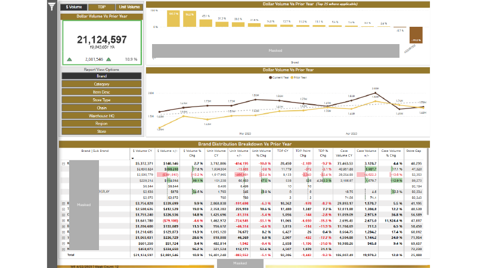
Weekly in-store and online dollar sales tracking alongside store in-stock percentage, with a potential lost-dollars estimate and store-outs by brand.
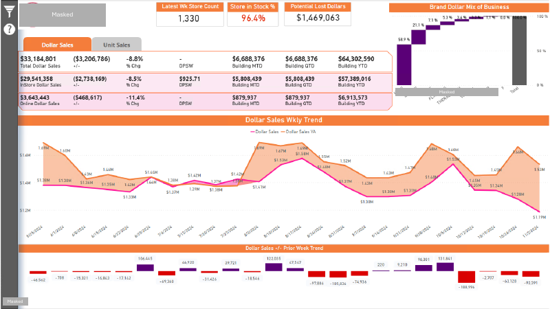
Company-versus-market sales comparisons, base-vs-incremental dollar breakdowns, market share by geography, and an item-level opportunity finder for the frozen novelty category.
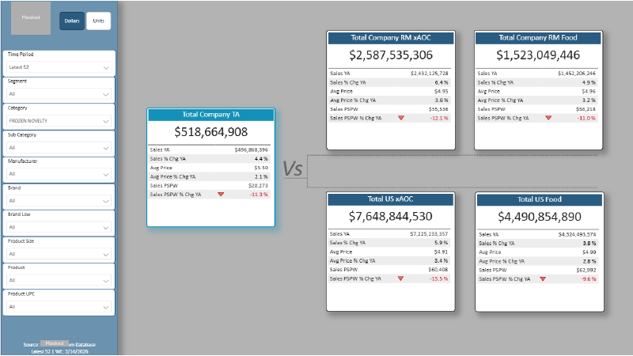
Category and brand franchise sales summaries across salty snacks, carbonated beverages, and natural cheese, with growth contribution waterfalls and promoted-versus-non-promoted sales mix.
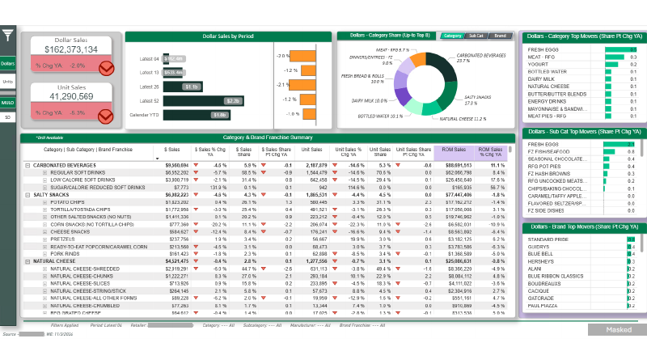